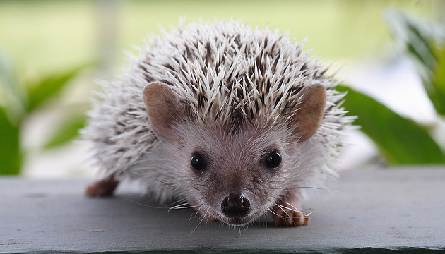

El Erizo
SITIOS RELACIONADOS
Los erizos son pequeños mamíferos cubiertos de púas; pertenecen al orden Eulipotyphla, aunque antiguamente eran considerados del orden Insectívoro, hoy en día obsoleto. Hay un total de dieciséis especies de erizos divididas en cinco géneros; el único erizo que no pertenece a esos géneros es el erizo gigante o también conocido como Erethizontidae.
Por lo general son mamiferos muy territoriales.
Los erizos habitan en Europa, Asia y África, también han sido introducidos en América, Nueva Zelanda y Australia, pero no hay erizos endémicos en Oceanía ni en América. En España viven dos especies: el erizo europeo y el erizo moruno, pero en cautividad es muy frecuente el erizo orejudo. Los erizos no han cambiado mucho durante los últimos quince millones de años. Como muchos de los primeros mamíferos, han adoptado una vida principalmente nocturna y una alimentación insectívora.

El erizo es un mamífero insectívoro que mide aproximadamente 24 centímetros y pesa hasta 1 kilogramo y medio. Tienen el lomo cubierto de púas y el resto cubierto de pelo marrón, negro o blanco. Son solitarios y territoriales. Suelen llevar a cabo un comportamiento llamado "ungimiento" que consiste en llenar objetos de saliva para marcarlos. Su gestación dura unos 35 días y paren de 2 a 5 crías, que destetan a las 6 semanas, Tiene un promedio de vida de entre 8 años.
Físicamente se caracterizan por sus púas, que son pelos huecos rellenos de queratina para darles rigidez. Las espinas no están afiladas como en el caso del puercoespín (no debe ser confundido con este) ni tampoco se desprenden con facilidad del animal.1 Sin embargo, durante el primer año de vida, los jóvenes sueltan sus espinas para reemplazarlas por las que tendrán siendo adultos. En períodos largos de estrés o bajo alguna enfermedad también pueden perderlas.
Tienen cinco dedos con uñas largas en las extremidades traseras, mientras que en las delanteras tienen cinco dedos con uñas cortas. Esto es debido a las costumbres excavadoras de los erizos. Solo los erizos de vientre blanco tienen cuatro dedos en las extremidades traseras.
Cuando se ven amenazados, los erizos son capaces de enrollarse sobre sí mismos formando una bola de púas. La efectividad de esta habilidad depende del número de púas que posean. Por eso los erizos del desierto, que han evolucionado para ser menos pesados, prefieren huir o incluso atacar al intruso con sus púas que confiar en su defensa de enrollamiento. Los diferentes métodos de defensa llevan consigo diferentes especies de depredadores: mientras que los erizos de bosque no tienen excesivos depredadores, principalmente los búhos y los hurones, especies pequeñas como el erizo orejudo son presas de los zorros o los lobos.
Todas las especies de erizo son principalmente nocturnas, aunque algunas pueden estar más activas de día que otras. Duermen durante gran parte del día entre la hierba o en agujeros en la tierra. Normalmente los erizos cavan madrigueras para protegerse. Todas las especies sufren épocas de letargo; algunos hibernan en invierno y otros estivan en verano, dependiendo de la especie, temperatura y abundancia de alimento.
Los erizos emiten una amplia gama de sonidos con los que comunicarse, desde gruñidos hasta fuertes chillidos. Son una especie muy sensible a los ruidos y movimientos bruscos. Cada vez que escuchan algún ruido diferente al que no estén acostumbrados se protegen con sus púas haciéndose una bola y emiten un sonido (como una respiración acelerada).
Todo el tiempo están olfateando y mueven la nariz de una manera muy particular (de un lado a otro).
Ocasionalmente los erizos realizan un ritual conocido como auto-ungimiento. Al percibir un olor nuevo el erizo correrá a su fuente, la olerá y la morderá. Después pegará la espuma olorosa de su boca en sus espinas con la lengua. La naturaleza de este comportamiento aún no está clara pero se especula con que pueda servir de camuflaje. Los bebés realizan el auto-ungimiento incluso antes de abrir los ojos.[cita requerida]
Al igual que zarigüeyas, ratones y moles, los erizos tienen cierta inmunidad natural contra parte del veneno de serpiente a través de la proteína erinacina en el sistema muscular del animal, aunque sólo está disponible en pequeñas cantidades y una mordedura de viper aún puede ser mortal. Además, los erizos son uno de los cuatro grupos de mamíferos conocidos con mutaciones que protegen contra otro veneno de serpiente, α-neurotoxina. [Los jabalíes, los tejones meleros, las mangostas y los erizos tienen mutaciones en el receptor nicotínico de la acetilcolina que impiden la unión de la α-neurotoxina del veneno de serpiente, aunque estas mutaciones se desarrollaron por separado y de forma independiente.